Portefolio mappen
Første semester
Tag et kig omkring i min portfolio mappe. Den har alle 6 tema'er, som vi har været igennem på det
første semester af multimediedesigner uddannelsen.
Her finder du: Løsning, proces og refleksioner for hvert enkelte tema. Samt links til de
forskellige tema sites.
Hvis du gerne vil vide lidt mere om mig først, så kan du også bare klikke på knappen her.
Mere om mig
Introuge
Formål med tema opgaven
I Introugen skulle vi i en gruppe i fællesskab planlægge, optage og redigere en video,
som vi skulle præsentere for holdet i slutningen af ugen. Formålet med denne opgave var
at lære gruppen bedre at kende, og at lave vores jeres første multimedieproduktion.Vi
skulle vælge et fælles tema og tage udgangspunkt i en serie/titelsekvens at udføre
videoen med inspiration fra.
Derudover skulle vi også oploade vores første hjemmeside via brugen af github.


Video løsning
Løsnings opsumering
I denne lille kort film møder vi tre guder, som lever blandt menneskene på jorden. De
lever i spændet mellem at være guddommelige skabere og de mundane
hverdagspligter.
Vi skælner mellem at bruge frøperspektiv og wideshot, til det guddommelige, og
fugleperspektiv og close-up, til det menneskelige. Vi bruger kamerar vinklerne til at
understøtte kontrasterne mellem gudernes handlinger.
Titlen "Vi bare guder" - kommer af tanken om vi alle har potentialet til at skabe noget
stort og ændre verden for andre. Budskabet er at selv dem der har kræften til at ændre
verden, det også er mundane, og fx.
skal handle ind.
Første site
Formålet med den første hjemmeside var, at vi fik oprettet os på github og fik oploaded en html fil. Derfor er løsningen heller ikke særlig æstetisk, men blot en begyndelse.
Link til første site:
Klik her for at se sidenVejen til målet
I gruppen brainstormede vi over, hvad der skulle være vores fælles tema og selvom vi havde mange fælles interesser, musik, design, kreativ udfoldelse i mange former, så var der et tema, der samlede det hele. Vores tema blev udvikling, det at skabe noget, processen at gå fra idé til virkelighed.
Deraf kom så konceptet om "vi bare guder", hvor guderne gik omkring os på jorden og gjorde de samme ting som alle os andre, de handlede ind, de holdt lange møder, spiste madpakker og var på mange måder mundane. Men deres fantasi og deres evne til at skabe noget ud af ingenting var det der gjorde dem unikke.
Vi brugte i gruppen meget tid på at filme på forskellige lokationer, lave vores kostumer fra bunden og havde store ambitioner for videoen. Til næste gang kunne det forbedre arbejdsprocessen og gøre storytellingen mere fokuseret, hvis vi var bedre til at give afkald på nogle af vores idéer.
Med det sagt, så lærte vi rigtig meget af at prøve alle idéerne af og ikke være bange for kaste os ud i noget, som vi ikke havde erfaring med. Vi fik ros for vores store arbejde med kostumer og lokationer, hvilket gjorde af vi også vandt bedste kostume til holdets award show.
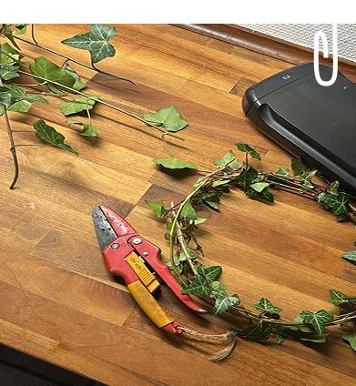
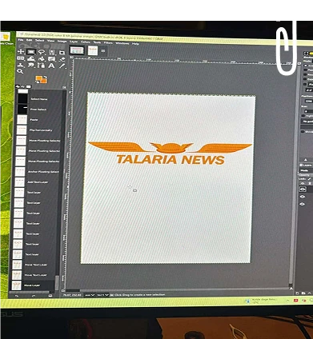
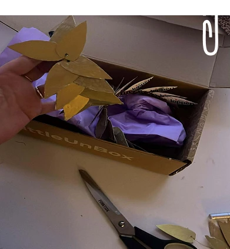
Grundlæggende HTML og CSS
Mål for tema 2 - opgave:
I dette tema skulle vi udfra udleverede wireframes, layout og billedemateriale udarbejde
vores egen site. Sitet skulle fungere i mobil og desktop format.
Sitet skulle have 5 sider, og benytte de id- og class navne som vi havde fået udleveret.
Siden skulle have farver på og minimum to forskellige fonte.
Derudover skulle sitet have en layout.css og en general.css. Også så skulle sitet kunne
valideres uden fejl.
Opgaven skulle derudover afleveres, som svar på semesterstartsprøve.

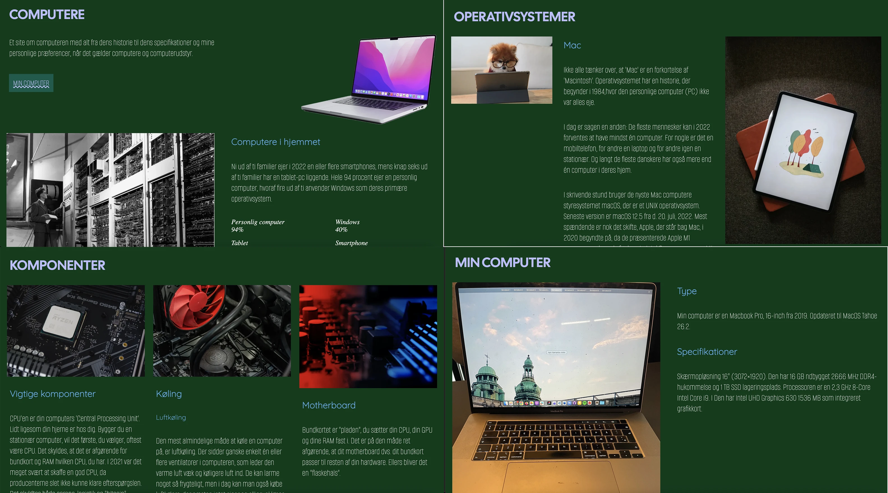
Løsnings opsumering
I tema 2 udviklede jeg et website om computeren ud fra udleverede wireframes og layouts.
Fokus var på at omsætte designet til et funktionelt og responsivt website ved hjælp af
HTML og CSS.
Gennem arbejdet med sitet lærte jeg at arbejde med layout, styling, navigation og media
queries, samtidig med at jeg satte mit eget præg på designet gennem valg af farver,
fonte og visuelle detaljer.
Tema 2 site
Sitet har fem sider: forsiden, min computer, operativ systemer, komponenter og galleri.
Den er byggeop udfra opgavens fastsatte wireframes og layout.
Men stylling af fonts, farver og hover effekten i menuen har jeg selv tilføjet mit
personlige præg på. Forsiden på sitet beskriver selv sitets formål som værende: "Et site
om computeren med alt fra dens historie til dens specifikationer og mine personlige
præferencer, når det gælder computere og computerudstyr."
Link til site:
Klik her for at se siden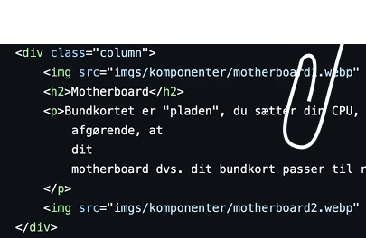
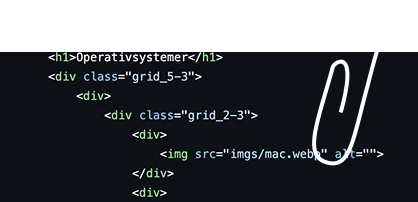
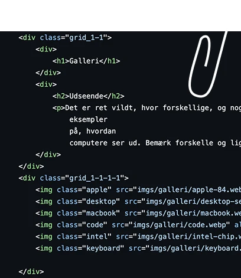
Vejen til målet
I tema 2 var processen anderledes end i de efterfølgende temaer, fordi vi fik udleveret meget af materialet og de tekniske rammer på forhånd. Derfor handlede processen mindre om research og idéudvikling og mere om at eksperimentere med de værktøjer og teknikker, vi blev introduceret til.
Jeg ser tema 2 som at blive introduceret til sandkassen på en legeplads. Man får
instruktionerne, redskaberne og materialerne udleveret på forhånd, så man kan lære de
grundlæggende teknikker.
Mulighederne er mange, men kreativiteten er i starten begrænset af, at man stadig er ved
at lære værktøjerne at kende.
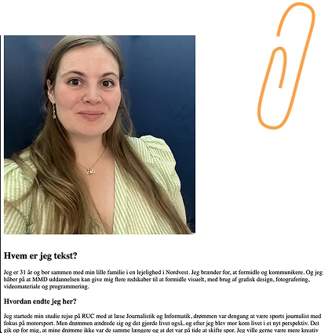
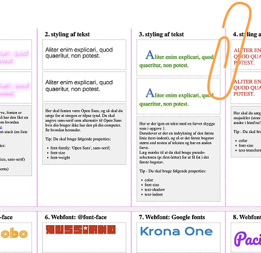
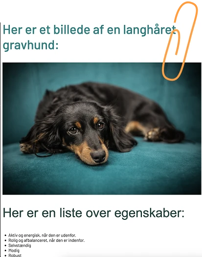
Grundlæggende UX/UI
Formål med tema opgaven
Formålet med tema 3 var at gennemføre en komplet UX/UI-designproces fra idé til færdigt
website. Vi skulle selv vælge et emne, researche målgruppe og indhold, udvikle en
digital prototype i Figma og efterfølgende kode et responsivt website i HTML, CSS (og
JavaScript).
Gennem brugerinddragelse, test og iteration var fokus på at skabe en brugervenlig
løsning samt dokumentere hele arbejdsprocessen fra de første idéer til det færdige
produkt.

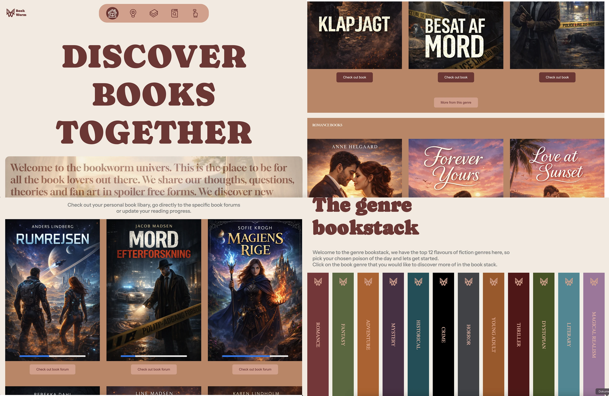
Løsnings opsumering
I tema 3 udviklede jeg en digitalt bogklub, kaldet bookworm. Vi fik for udfordringen at
skabe et site udfra en af vores egne interesser.
Jeg valgte bøger og at skabe et fællesskab, hvor kærlighed for literatur, særligt
skønliteratur var fællesnævneren. Projektet tog udgangspunkt i en UX/UI-proces, hvor jeg
arbejdede med idéudvikling, research, prototyping, test og kodning.
Resultatet blev et responsivt website, hvor brugeren kan navigere mellem bøger, genrer
og et personligt bibliotek.
Tema 3 site
Sitet er bygget op omkring idéen om et digitalt bibliotek, hvor brugeren kan få overblik
over bøger, genrer og sin læsestatus. Designet tager inspiration fra en fysisk bogreol,
hvilket blandt andet ses i brugen af bogcovers, lodret tekst på bogrygge og progress
bars.
Fokus har været på at skabe en overskuelig og brugervenlig oplevelse, hvor navigationen
er tydelig, og hvor det visuelle udtryk understøtter sitets tema.
Link til site:
Klik her for at se siden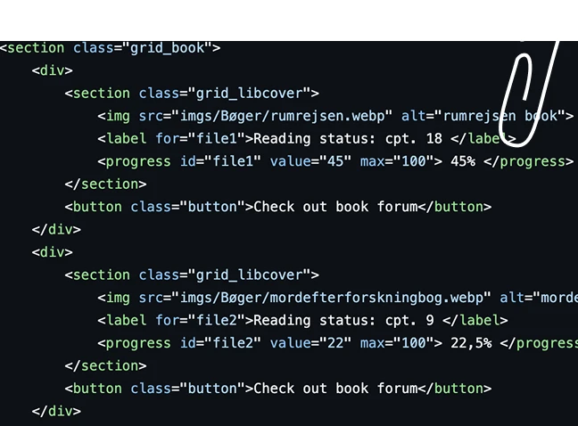
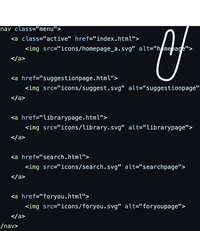
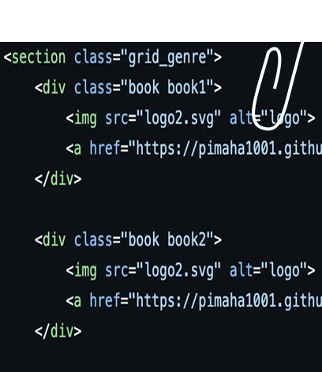
Vejen til målet
I tema 3 arbejdede jeg med hele UX/UI-processen fra research og idéudvikling til design,
test og kodning af det færdige website. Modsat tema 2 skulle vi selv definere
problemfelt, målgruppe og visuel identitet.
Derfor blev brugerundersøgelser og test en vigtig del af processen, så
designbeslutningerne kunne baseres på faktiske brugerbehov frem for antagelser.
Projektet resulterede i Bookworm – et digitalt bogfællesskab for læsere. Gennem research, moodboards, skitser, prototyper og brugertest udviklede jeg gradvist sitets funktioner og visuelle udtryk med fokus på fællesskab, inspiration og brugervenlighed.
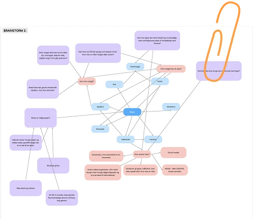
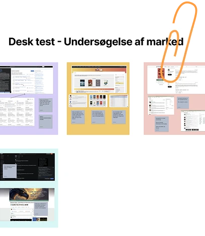
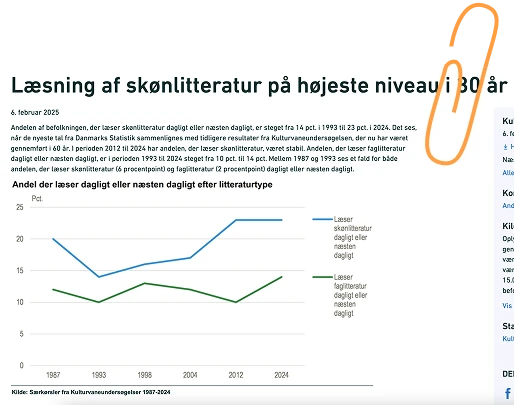
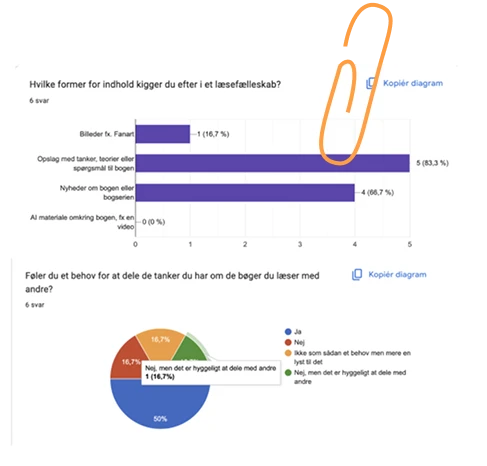
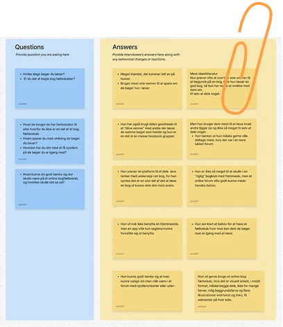
Grundlæggende Brugergrænsefladeudvikling
Formål med tema opgaven
Formålet med tema 4 projektet var at udvikle et interaktivt Emergency Site med fokus på
webdesign, CSS, JavaScript og vectorgrafik. Opgaven bestod i at videreudvikle et
eksisterende website ved at designe og implementere forskellige elementer, herunder en
interaktiv infografik, en webformular, en forside samt en dark mode-funktion.
Gennem arbejdet med sitet var målet at opnå praktisk erfaring med både visuel formidling
og teknisk udvikling, samtidig med at der blev dokumenteret designvalg, arbejdsproces og
anvendt kode. Vi skulle selv vælge en Emergency situation som temaet for sitet.

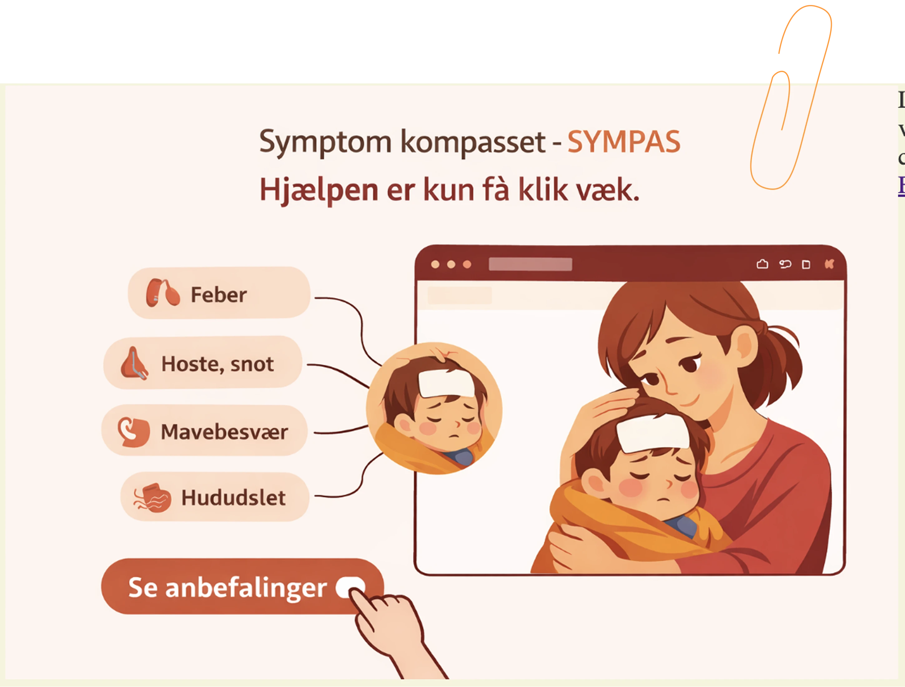
Løsnings opsumering
I tema 4 udviklede jeg Emergency-sitet SYMPAS – Symptomkompasset, som er et
digitalt
værktøj designet til at hjælpe forældre med at navigere i situationer, hvor
deres barn
er sygt eller har symptomer. Løsningen består af en interaktiv infografik, hvor
brugeren
kan klikke på forskellige områder af kroppen for at få vist relevante symptomer,
råd og
mulige sygdomme.
Derudover indeholder sitet en spørgekasse, hvor brugeren kan indsende spørgsmål,
samt en
forside, der introducerer sitets formål. Og på forsiden vil man kunne se teasers
sidens
øvrige indlæg, som fx.
kunne handle om eksperters gode råd, statestikker over hvilke sygdomme der
rammer børn
mest og hvornår, samt introduktion til at benytte SYMPAS redskabet. Målet har
været at
skabe et enkelt og overskueligt værktøj, som hurtigt kan guide brugeren videre i
en
presset situation.
Tema site
SYMPAS er opbygget omkring idéen om et digitalt symptomkompas for forældre. Sitet gør
det
muligt at udforske forskellige symptomområder ved hjælp af en interaktiv
illustration af
et barn.
Når brugeren klikker på et område af kroppen, vises relevante symptomer, vejledning
og
mulige sygdomme. Designet er inspireret af den offentlige sundhedssektor med fokus
på
tydelig navigation, rolige farver og et overskueligt informationshierarki.
Navnet Symptomkompasset og det tilhørende kompas-logo understøtter sitets formål om
at
hjælpe brugeren med at finde vej gennem symptomer og anbefalinger.
Link til site:
Klik her for at se siden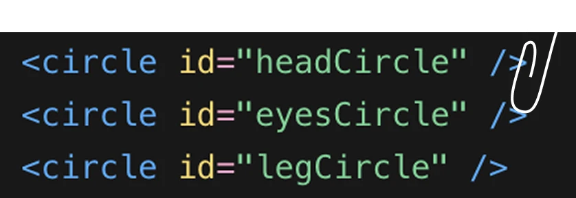
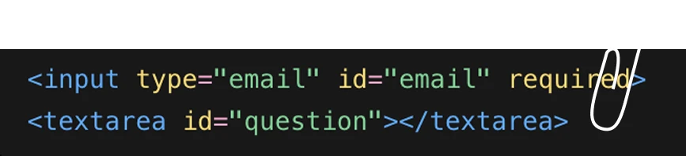
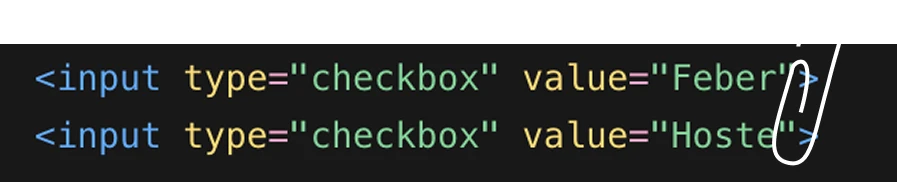
Vejen til målet
I tema 4 arbejdede jeg med at videreudvikle et Emergency Site ud fra en udleveret kodeskabelon. Derfor handlede opgaven ikke i samme grad som tidligere temaer om at udvikle et koncept helt fra bunden, men mere om at løse konkrete delopgaver og implementere nye funktioner på sitet.
Mit emergency-koncept blev "Hjælp – mit barn er syg". Jeg valgte dette tema, fordi det er
en hverdagsproblematik, som mange forældre kan genkende.
Børn bliver ofte syge eller kommer til skade, og i de situationer kan det være svært
hurtigt at overskue symptomer, sygdomme og retningslinjer. Derfor ønskede jeg at skabe
et simpelt redskab, der kunne guide forældre videre.
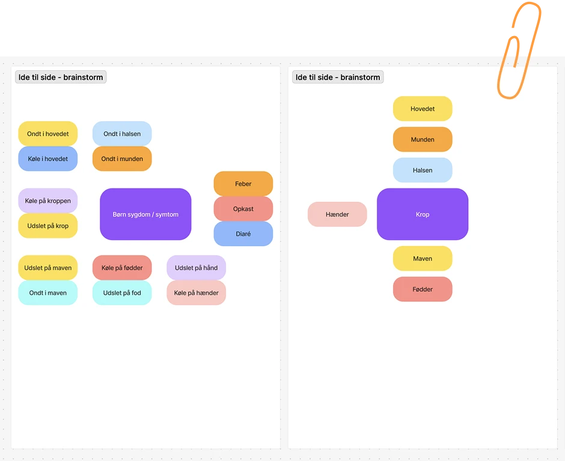
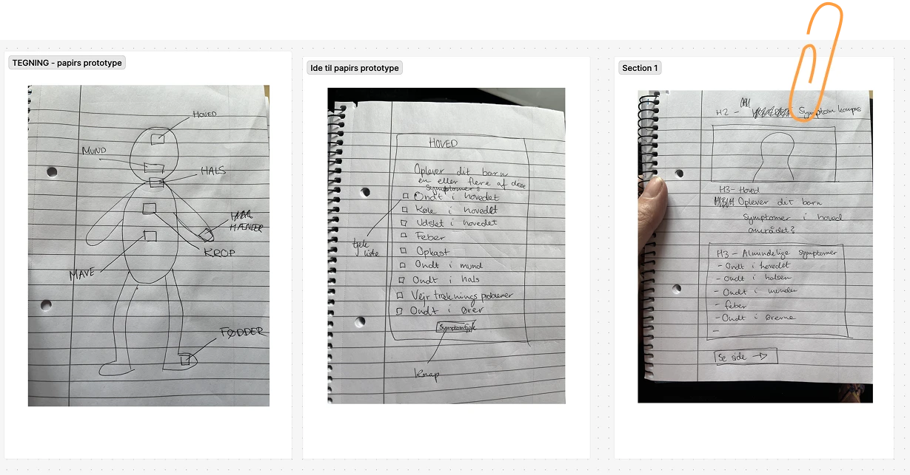
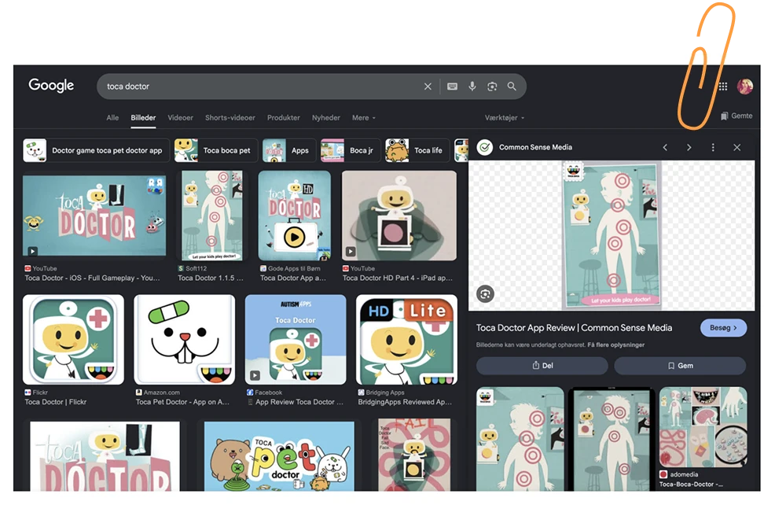
Grundlæggende indhold
Formål med tema opgaven
Formålet med temaopgaven var at udvikle et redesign af en selvvalgt virksomheds
website.
Vi arbejdede med hele processen fra research og idéudvikling til prototype,
indholdsproduktion, kodning og test.
Målet var at skabe et brugervenligt og visuelt sammenhængende website, der understøttede
virksomhedens identitet og målgruppe.
Vi arbejdede i grupper og fordelte arbejdsopgaverne mellem os ved hjælp af
scrum-metoden. Derudover skulle vi hver især kode en side på sitet.

Løsnings opsumering
I tema 5 redesignede vi Echo Bars website med fokus på stemning, brugervenlighed og
tydeligere information.
Vi ønskede at skabe et site, der bedre formidlede barens atmosfære, cocktails, events og
Silent Disco-koncept.
Løsningen blev et visuelt mørkt og stemningsfuldt website med ny struktur, nyt billed-
og videomateriale samt interaktive elementer.
Tema site
Sitet er bygget op omkring Echo Bars identitet og kælderstemning.
Vi bevarede det originale logo og brugte det som en rød tråd i designet.
Derudover tilføjede vi blandt andet en Silent Disco-side, en menuside og en
reservationsfunktion, så brugeren nemmere kan få overblik over barens tilbud.
Link til site:
Klik her for at se siden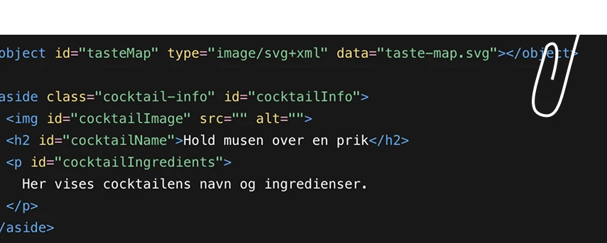
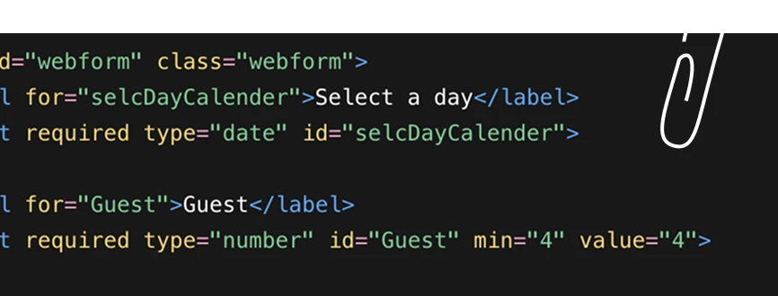

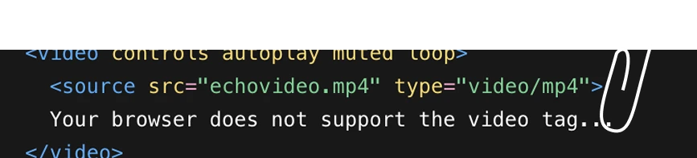


Vejen til målet
I tema 5 arbejdede vi med redesign af en virkelig virksomheds website. Opgaven gav mulighed for at afprøve hele den digitale designproces i praksis. Vi gik fra research og kontakt med virksomheden til et færdigt kodet website.
Vi valgte Echo Bar, fordi vi så et potentiale i at formidle barens stemning bedre digitalt. Fokus var især at gøre sitet mere visuelt engagerende og samtidig mere overskueligt for brugeren.


Tema 6 titel
Formål med tema opgaven
Her skriver du kort om formålet med tema 6.
Beskriv hvad opgaven gik ud på, hvilke krav der var, og hvad du skulle lære gennem
projektet.

Løsnings opsumering
Her skriver du en kort opsummering af din løsning.
Beskriv hvad du har lavet, hvad sitet eller projektet kan, og hvilke valg der er vigtige
for løsningen.
Tema site
Her beskriver du det færdige site.
Skriv kort om indhold, design, målgruppe og funktioner.
Link til site:
Klik her for at se siden


Vejen til målet
Her skriver du kort om processen i tema 6.
Beskriv hvordan du gik fra idé til færdigt produkt.
Her kan du skrive om de vigtigste valg, udfordringer og ændringer undervejs.
Hold afsnittene korte, så teksten bliver nemmere at læse.